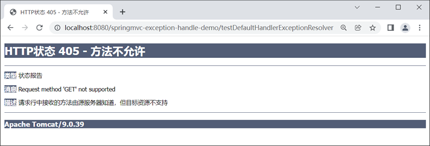
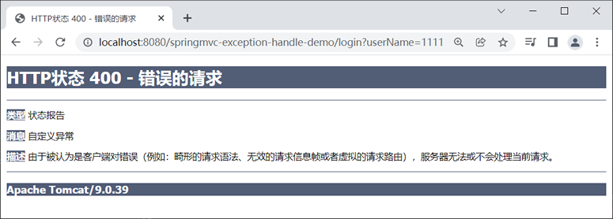
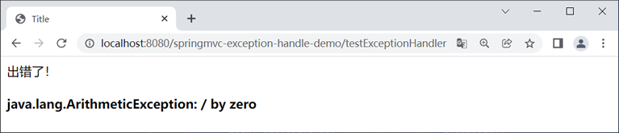
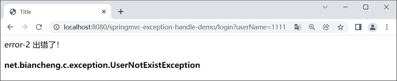
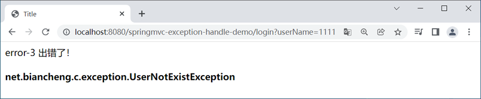

首页 > Spring MVC
Spring MVC异常处理
在实际的应用开发中，经常会不可避免地遇到各种可预知的、不可预知的异常，此时我们就需要对这些异常处理，以保证程序正常运行。
Spring MVC 提供了一个名为 HandlerExceptionResolver 的异常处理器接口，它可以对控制器方法执行过程中出现的各种异常进行处理。
Srping MVC 为 HandlerExceptionResolver 接口提供了多个不同的实现类，其中最常用的实现类如下。
其中，ExceptionHandlerExceptionResolver、ResponseStatusExceptionResolver 和 DefaultHandlerExceptionResolver 是 Spring MVC 的默认异常处理器。
如果程序发生异常，Spring MVC 会按照 ExceptionHandlerExceptionResolver → ResponseStatusExceptionResolver → DefaultHandlerExceptionResolver 的顺序，依次使用这三个异常处理器对异常进行解析，直到完成对异常的解析工作为止。
DefaultHandlerExceptionResolver 提供了一个 doResolveException() 方法，其返回类型为 ModelAndView。该方法会在控制器方法出现指定异常时，生成一个新的包含了异常信息的 ModelAndView 对象替换控制器方法的 ModelAndView 对象，以达到跳转到指定的错误页面，展示异常信息的目的，其部分源码如下。
从上面的代码可以看出，DefaultHandlerExceptionResolver 的 doResolveException() 方法可以将 Spring MVC 产生的各种异常转换为合适的状态码（code）。通过这些状态码，我们就可以进一步的确定发生异常的原因，以便于找到对应的问题。
下表中列举了 Spring MVC 中一些常见异常的默认状态码。
1. . 新建一个名为 springmvc-exception-handle-demo 的 Web 工程，并将与 Spring MVC 相关的依赖引入到工程中，其 web.xml 的配置内容如下。
2. 在 src 目录下（类路径下）新建一个 Spring MVC 的配置文件：springMVC.xml，其配置内容如下。
3. 在 net.biancheng.c.controller 包下，创建一个名为 ExceptionController 的 Controller 类，代码如下。
4. 在 webapp/WEB-INF 下新建一个 templates 目录，并在该目录下创建一个 success.html，代码如下。
5. 将 springmvc-exception-handle-demo 部署到 Tomcat 服务器中并启动，使用浏览器访问“http://localhost:8080/springmvc-exception-handle-demo/testDefaultHandlerExceptionResolver”，结果如下图。
6. 控制台输出如下。
如果程序运行时发生了这个自定义的异常，Spring MVC 就会通过 ResponseStatusExceptionResolver 对该异常进行解析，并将异常信息展示到错误页上。
@ResponseStatus 注解包含了三个属性，如下表。
1. 在 springmvc-exception-handle-demo 的 net.biancheng.c.exception 包下，创建一个名为 UserNotExistException 的自定义异常类，代码如下。
2. 在 net.biancheng.c.entity 包下，创建一个名为 User 的实体类，代码如下。
3. 在 net.biancheng.c.controller 包下，创建一个 UserController 的 Controller 类，代码如下。
4. 在 net.biancheng.c.dao 包下，创建一个 UserDao 类，代码如下。
5. 重启 Tomcat 服务器，使用浏览器访问“http://localhost:8080/springmvc-exception-handle-demo/login?userName=1111”，结果如下图。
ExceptionHandlerExceptionResolver 可以在控制器方法出现异常时，调用相应的 @ExceptionHandler 方法（即使用了 @ExceptionHandler 注解的方法）对异常进行处理。
@ExceptionHandler 注解中包含了一个 value 属性，我们可以通过该属性来声明一个指定的异常。如果在程序运行过程中，这个 Controller 类中的方法发生了这个指定的异常，那么 ExceptionHandlerExceptionResolver 就会调用这个 @ExceptionHandler 方法对异常进行处理。
1. 在 springmvc-exception-handle-demo 内的 net.biancheng.c.controller 包内，创建一个名为 ExceptionController2 的控制器类，代码如下。
2. 在 webapp/WEB-INF/tempaltes 目录下下，再创建一个名为 error.html 的错误页，代码如下。
3. 重启 Tomcat 服务器，使用浏览器访问“http://localhost:8080/springmvc-exception-handle-demo/testExceptionHandler”，结果如下图。
假设，我们在 ExceptionController 中又定义了一个名为 handleException2 的异常处理方法，代码如下。
从上面的代码可以看出，handleException 声明的异常为 Exception，handleException 声明的异常为 RuntimeException，且 Exception 是 RuntimeException 的父类。若此时控制器方法发生了 ArithmeticException 异常，那么 ExceptionHandlerExceptionResolver 会根据继承关系，调用继承深度最浅的异常处理方法（即 handleException2 方法），对异常进行处理。
注意，定义在某个控制器类中的 @ExceptionHandler 方法只在当前的控制器中有效，它只能处理其所在控制器类中发生的异常。
1. 在 springmvc-exception-handle-demo 内的 net.biancheng.c.controller 包内，创建一个名为ExceptionControllerAdvice 的类，代码如下。
2. 在 webapp/WEB-INF/tempaltes 目录下，再创建一个名为 error-2.html 的错误页，代码如下。
3. 重启 Tomcat 服务器，使用浏览器访问“http://localhost:8080/springmvc-exception-handle-demo/login?userName=1111”，结果如下图。
1. 默认情况下，Spring MVC 的上下文中并没有装配 SimpleMappingExceptionResolver 的实例，因此我们在使用它进行统一处理异常前，需要在 Spring MVC 配置文件中配置异常类和 View 的对应关系，具体代码如下：
2. 在 webapp/WEB-INF/templates 目录下，新建一个名为 error-3 的错误页，代码如下。
3. 重启 Tomcat 服务器，使用浏览器访问“http://localhost:8080/springmvc-exception-handle-demo/login?userName=1111”，结果如下图。
Spring MVC 提供了一个名为 HandlerExceptionResolver 的异常处理器接口，它可以对控制器方法执行过程中出现的各种异常进行处理。
Srping MVC 为 HandlerExceptionResolver 接口提供了多个不同的实现类，其中最常用的实现类如下。
- DefaultHandlerExceptionResolver
- ResponseStatusExceptionResolver
- ExceptionHandlerExceptionResolver
- SimpleMappingExceptionResolver
其中，ExceptionHandlerExceptionResolver、ResponseStatusExceptionResolver 和 DefaultHandlerExceptionResolver 是 Spring MVC 的默认异常处理器。
如果程序发生异常，Spring MVC 会按照 ExceptionHandlerExceptionResolver → ResponseStatusExceptionResolver → DefaultHandlerExceptionResolver 的顺序，依次使用这三个异常处理器对异常进行解析，直到完成对异常的解析工作为止。
DefaultHandlerExceptionResolver
DefaultHandlerExceptionResolver 是 HandlerExceptionResolver 接口的常用实现类之一，更是 Spring MVC 提供的默认异常处理器之一，Spring MVC 默认通过它对控制器处理请求时出现的异常进行处理。DefaultHandlerExceptionResolver 提供了一个 doResolveException() 方法，其返回类型为 ModelAndView。该方法会在控制器方法出现指定异常时，生成一个新的包含了异常信息的 ModelAndView 对象替换控制器方法的 ModelAndView 对象，以达到跳转到指定的错误页面，展示异常信息的目的，其部分源码如下。
@Nullable
protected ModelAndView doResolveException(HttpServletRequest request, HttpServletResponse response, @Nullable Object handler, Exception ex) {
try {
if (ex instanceof HttpRequestMethodNotSupportedException) {
return this.handleHttpRequestMethodNotSupported((HttpRequestMethodNotSupportedException)ex, request, response, handler);
}
if (ex instanceof HttpMediaTypeNotSupportedException) {
return this.handleHttpMediaTypeNotSupported((HttpMediaTypeNotSupportedException)ex, request, response, handler);
}
if (ex instanceof HttpMediaTypeNotAcceptableException) {
return this.handleHttpMediaTypeNotAcceptable((HttpMediaTypeNotAcceptableException)ex, request, response, handler);
}
……
} catch (Exception var6) {
if (this.logger.isWarnEnabled()) {
this.logger.warn("Failure while trying to resolve exception [" + ex.getClass().getName() + "]", var6);
}
}
return null;
}
从上面的代码可以看出，DefaultHandlerExceptionResolver 的 doResolveException() 方法可以将 Spring MVC 产生的各种异常转换为合适的状态码（code）。通过这些状态码，我们就可以进一步的确定发生异常的原因，以便于找到对应的问题。
下表中列举了 Spring MVC 中一些常见异常的默认状态码。
| 异常 | 状态码 | 说明 |
|---|---|---|
| HttpRequestMethodNotSupportedException | 405（Method Not Allowed） | HTTP 请求方式不支持异常 |
| HttpMediaTypeNotSupportedException | 415（Unsupported Media Type） | HTTP 媒体类型不支持异常 |
| HttpMediaTypeNotAcceptableException | 406（Not Acceptable） | HTTP 媒体类型不可接受异常 |
| BindException | 400（Bad Request） | 数据绑定异常 |
| MissingServletRequestParameterException | 400（Bad Request） | 缺少参数异常 |
| ConversionNotSupportedException | 500（Internal Server Error） | 数据类型转换异常 |
| TypeMismatchException | 400（Bad Request） | 类型不匹配异常 |
| HttpMessageNotReadableException | 400（Bad Request） | HTTP 消息不可读异常 |
| HttpMessageNotWritableException | 500（Internal Server Error） | HTTP 消息不可写异常 |
上表中只列举一些常见的异常状态码，至于更多的异常及其状态码映射，请参考 org.springframework.http.HttpStatus。
示例 1
下面我们就通过一个简单的案例，来演示下 Spring MVC 是如何通过 DefaultHandlerExceptionResolver 对异常进行处理的，步骤如下。1. . 新建一个名为 springmvc-exception-handle-demo 的 Web 工程，并将与 Spring MVC 相关的依赖引入到工程中，其 web.xml 的配置内容如下。
<?xml version="1.0" encoding="UTF-8"?>
<web-app xmlns="http://xmlns.jcp.org/xml/ns/javaee"
xmlns:xsi="http://www.w3.org/2001/XMLSchema-instance"
xsi:schemaLocation="http://xmlns.jcp.org/xml/ns/javaee http://xmlns.jcp.org/xml/ns/javaee/web-app_4_0.xsd"
version="4.0">
<!--请求和响应的字符串过滤器-->
<filter>
<filter-name>CharacterEncodingFilter</filter-name>
<filter-class>org.springframework.web.filter.CharacterEncodingFilter</filter-class>
<init-param>
<param-name>encoding</param-name>
<param-value>UTF-8</param-value>
</init-param>
<init-param>
<param-name>forceResponseEncoding</param-name>
<param-value>true</param-value>
</init-param>
</filter>
<filter-mapping>
<filter-name>CharacterEncodingFilter</filter-name>
<url-pattern>/*</url-pattern>
</filter-mapping>
<!--来处理 PUT 和 DELETE 请求的过滤器-->
<filter>
<filter-name>HiddenHttpMethodFilter</filter-name>
<filter-class>org.springframework.web.filter.HiddenHttpMethodFilter</filter-class>
</filter>
<filter-mapping>
<filter-name>HiddenHttpMethodFilter</filter-name>
<url-pattern>/*</url-pattern>
</filter-mapping>
<!-- 配置SpringMVC的前端控制器，对浏览器发送的请求统一进行处理 -->
<servlet>
<servlet-name>dispatcherServlet</servlet-name>
<servlet-class>org.springframework.web.servlet.DispatcherServlet</servlet-class>
<init-param>
<param-name>contextConfigLocation</param-name>
<param-value>classpath:springMVC.xml</param-value>
</init-param>
<load-on-startup>1</load-on-startup>
</servlet>
<servlet-mapping>
<servlet-name>dispatcherServlet</servlet-name>
<url-pattern>/</url-pattern>
</servlet-mapping>
</web-app>
2. 在 src 目录下（类路径下）新建一个 Spring MVC 的配置文件：springMVC.xml，其配置内容如下。
<?xml version="1.0" encoding="UTF-8"?>
<beans xmlns="http://www.springframework.org/schema/beans"
xmlns:xsi="http://www.w3.org/2001/XMLSchema-instance"
xmlns:context="http://www.springframework.org/schema/context"
xmlns:mvc="http://www.springframework.org/schema/mvc"
xsi:schemaLocation="http://www.springframework.org/schema/beans
http://www.springframework.org/schema/beans/spring-beans.xsd
http://www.springframework.org/schema/context
https://www.springframework.org/schema/context/spring-context.xsd http://www.springframework.org/schema/mvc https://www.springframework.org/schema/mvc/spring-mvc.xsd">
<!--开启组件扫描-->
<context:component-scan base-package="net.biancheng.c"></context:component-scan>
<!-- 配置 Thymeleaf 视图解析器 -->
<bean id="viewResolver"
class="org.thymeleaf.spring5.view.ThymeleafViewResolver">
<property name="order" value="1"/>
<property name="characterEncoding" value="UTF-8"/>
<property name="templateEngine">
<bean class="org.thymeleaf.spring5.SpringTemplateEngine">
<property name="templateResolver">
<bean class="org.thymeleaf.spring5.templateresolver.SpringResourceTemplateResolver">
<!-- 视图前缀 -->
<property name="prefix" value="/WEB-INF/templates/"/>
<!-- 视图后缀 -->
<property name="suffix" value=".html"/>
<property name="templateMode" value="HTML5"/>
<property name="characterEncoding" value="UTF-8"/>
</bean>
</property>
</bean>
</property>
</bean>
<!-- 当SpringMVC中设置任何一个view-controller时，其他控制器中的请求映射将全部失效，此时需要在SpringMVC的核心配置文件中设置开启mvc注解驱动的标签-->
<mvc:annotation-driven></mvc:annotation-driven>
</beans>
3. 在 net.biancheng.c.controller 包下，创建一个名为 ExceptionController 的 Controller 类，代码如下。
package net.biancheng.c.controller;
import org.springframework.stereotype.Controller;
import org.springframework.web.bind.annotation.RequestMapping;
import org.springframework.web.bind.annotation.RequestMethod;
@Controller
public class ExceptionController {
/**
* 测试 DefaultHandlerExceptionResolver（Spring MVC 默认的异常处理器）
* @return
*/
@RequestMapping(value = "/testDefaultHandlerExceptionResolver", method = RequestMethod.POST)
public String testDefaultHandlerExceptionResolver() {
return "success";
}
}
4. 在 webapp/WEB-INF 下新建一个 templates 目录，并在该目录下创建一个 success.html，代码如下。
<!DOCTYPE html>
<html lang="en" xmlns:th="http://www.thymeleaf.org">
<head>
<meta charset="UTF-8">
<title>Title</title>
</head>
<body>
<h1>访问成功</h1>
</body>
</html>
5. 将 springmvc-exception-handle-demo 部署到 Tomcat 服务器中并启动，使用浏览器访问“http://localhost:8080/springmvc-exception-handle-demo/testDefaultHandlerExceptionResolver”，结果如下图。

图1：错误页面
图1：错误页面
6. 控制台输出如下。
17:55:58.370 [http-nio-8080-exec-10] DEBUG org.springframework.web.servlet.DispatcherServlet - GET "/springmvc-exception-handle-demo/testDefaultHandlerExceptionResolver", parameters={}
17:55:58.372 [http-nio-8080-exec-10] WARN org.springframework.web.servlet.mvc.support.DefaultHandlerExceptionResolver - Resolved [org.springframework.web.HttpRequestMethodNotSupportedException: Request method 'GET' not supported]
17:55:58.372 [http-nio-8080-exec-10] DEBUG org.springframework.web.servlet.DispatcherServlet - Completed 405 METHOD_NOT_ALLOWED
ResponseStatusExceptionResolver
ResponseStatusExceptionResolver 也是 HandlerExceptionResolver 的实现类之一。与 DefaultHandlerExceptionResolver 一样，ResponseStatusExceptionResolver 也是 Spring MVC 提供的默认异常处理器之一，它被用来解析 @ResponseStatus 注解标注的自定义异常，并把异常的状态信息返回给客户端展示。@ResponseStatus 注解
@ResponseStatus 注解主要用来标注在自定义的异常类上，示例代码如下。
package net.biancheng.c.exception;
import org.springframework.http.HttpStatus;
import org.springframework.web.bind.annotation.ResponseStatus;
@ResponseStatus(code = HttpStatus.BAD_REQUEST, reason = "自定义异常")
public class UserNotExistException extends RuntimeException {
}
如果程序运行时发生了这个自定义的异常，Spring MVC 就会通过 ResponseStatusExceptionResolver 对该异常进行解析，并将异常信息展示到错误页上。
@ResponseStatus 注解包含了三个属性，如下表。
| 属性 | 说明 |
|---|---|
| code |
设置异常的状态码。 code 为 @ResponseStatus 注解 value 属性的别名，与 value 属性完全等价。 |
| value |
设置异常的状态码。 value 为 @ResponseStatus 注解 code 属性的别名，与 code 属性完全等价。 |
| reason | 设置异常的原因或描述。 |
示例 2
下面，我们通过一个简单的实例，来演示下 ResponseStatusExceptionResolver 和 @ResponseStatus 注解的使用，具体步骤如下。1. 在 springmvc-exception-handle-demo 的 net.biancheng.c.exception 包下，创建一个名为 UserNotExistException 的自定义异常类，代码如下。
package net.biancheng.c.exception;
import org.springframework.http.HttpStatus;
import org.springframework.web.bind.annotation.ResponseStatus;
@ResponseStatus(code = HttpStatus.BAD_REQUEST, reason = "自定义异常")
public class UserNotExistException extends RuntimeException {
}
2. 在 net.biancheng.c.entity 包下，创建一个名为 User 的实体类，代码如下。
package net.biancheng.c.entity;
public class User {
private String userId;
private String userName;
private String password;
public String getUserId() {
return userId;
}
public void setUserId(String userId) {
this.userId = userId;
}
public String getUserName() {
return userName;
}
public void setUserName(String userName) {
this.userName = userName;
}
public String getPassword() {
return password;
}
public void setPassword(String password) {
this.password = password;
}
@Override
public String toString() {
return "User{" +
"userId='" + userId + '\'' +
", userName='" + userName + '\'' +
", password='" + password + '\'' +
'}';
}
}
3. 在 net.biancheng.c.controller 包下，创建一个 UserController 的 Controller 类，代码如下。
package net.biancheng.c.controller;
import net.biancheng.c.dao.UserDao;
import net.biancheng.c.entity.User;
import net.biancheng.c.exception.UserNotExistException;
import org.springframework.stereotype.Controller;
import org.springframework.ui.Model;
import org.springframework.web.bind.annotation.RequestMapping;
import javax.annotation.Resource;
@Controller
public class UserController {
@Resource
private UserDao userDao;
@RequestMapping("/login")
public String login(String userName, Model model) {
User user = userDao.getUserByUserName(userName);
if (user == null) {
throw new UserNotExistException();
}
return "success";
}
}
4. 在 net.biancheng.c.dao 包下，创建一个 UserDao 类，代码如下。
package net.biancheng.c.dao;
import net.biancheng.c.entity.User;
import org.springframework.stereotype.Repository;
import java.util.*;
@Repository
public class UserDao {
private static Map<String, User> users = null;
static {
users = new HashMap<String, User>();
User user = new User();
User user2 = new User();
user2.setUserId("1001");
user2.setUserName("admin");
user2.setPassword("admin");
users.put(user.getUserName(), user);
users.put(user2.getUserName(), user2);
}
/**
* 根据用户名获取用户信息
*
* @param userName
* @return
*/
public User getUserByUserName(String userName) {
User user = users.get(userName);
return user;
}
}
5. 重启 Tomcat 服务器，使用浏览器访问“http://localhost:8080/springmvc-exception-handle-demo/login?userName=1111”，结果如下图。

图2：自定义异常
图2：自定义异常
ExceptionHandlerExceptionResolver
ExceptionHandlerExceptionResolver 是 HandlerExceptionResolver 接口的实现类之一，它也是 Spring MVC 提供的默认异常处理器之一。ExceptionHandlerExceptionResolver 可以在控制器方法出现异常时，调用相应的 @ExceptionHandler 方法（即使用了 @ExceptionHandler 注解的方法）对异常进行处理。
@ExceptionHandler 注解
Spring MVC 允许我们在控制器类（Controller 类）中通过 @ExceptionHandler 注解来定义一个处理异常的方法，以实现对控制器类内发生异常的处理。@ExceptionHandler 注解中包含了一个 value 属性，我们可以通过该属性来声明一个指定的异常。如果在程序运行过程中，这个 Controller 类中的方法发生了这个指定的异常，那么 ExceptionHandlerExceptionResolver 就会调用这个 @ExceptionHandler 方法对异常进行处理。
示例 3
下面我们就通过一个简单的案例，来演示下如何通过 @ExceptionHandler 注解定义一个异常处理方法，对控制器内发生的异常进行处理的，步骤如下。1. 在 springmvc-exception-handle-demo 内的 net.biancheng.c.controller 包内，创建一个名为 ExceptionController2 的控制器类，代码如下。
package net.biancheng.c.controller;
import net.biancheng.c.exception.UserNotExistException;
import org.springframework.stereotype.Controller;
import org.springframework.ui.Model;
import org.springframework.web.bind.annotation.ExceptionHandler;
import org.springframework.web.bind.annotation.RequestMapping;
@Controller
public class ExceptionController2 {
//控制器方法
@RequestMapping(value = "/testExceptionHandler")
public String testExceptionHandler() {
//发生 ArithmeticException 异常
System.out.println(10 / 0);
return "success";
}
//使用 @ExceptionHandler 注解定义一个异常处理方法
@ExceptionHandler(ArithmeticException.class)
public String handleException(ArithmeticException exception, Model model) {
//将异常信息通过 Model 放到 request 域中，以方便在页面中展示异常信息
model.addAttribute("ex", exception);
//跳转到错误页
return "error";
}
}
2. 在 webapp/WEB-INF/tempaltes 目录下下，再创建一个名为 error.html 的错误页，代码如下。
<!DOCTYPE html>
<html lang="en" xmlns:th="http://www.thymeleaf.org">
<head>
<meta charset="UTF-8">
<title>Title</title>
</head>
<body>
出错了！
<h4 th:text="${ex}"></h4>
</body>
</html>
3. 重启 Tomcat 服务器，使用浏览器访问“http://localhost:8080/springmvc-exception-handle-demo/testExceptionHandler”，结果如下图。

图3：异常处理器
图3：异常处理器
@ExceptionHandler 方法的优先级
如果我们在同一个控制器类内使用 @ExceptionHandler 注解定义了多个异常处理的方法，那么我们就需要注意下 @ExceptionHandler 方法的优先级问题。假设，我们在 ExceptionController 中又定义了一个名为 handleException2 的异常处理方法，代码如下。
package net.biancheng.c.controller;
import org.springframework.stereotype.Controller;
import org.springframework.ui.Model;
import org.springframework.web.bind.annotation.ExceptionHandler;
import org.springframework.web.bind.annotation.RequestMapping;
@Controller
public class ExceptionController {
//控制器方法
@RequestMapping(value = "/testExceptionHandler")
public String testExceptionHandler() {
//发生 ArithmeticException 异常
System.out.println(10 / 0);
return "success";
}
//使用 @ExceptionHandler 注解定义一个异常处理方法
@ExceptionHandler(value = {Exception.class})
public String handleException(Exception exception, Model model) {
//将异常信息通过 Model 放到 request 域中，以方便在页面中展示异常信息
model.addAttribute("ex", exception);
//跳转到错误页
return "error";
}
@ExceptionHandler(value = {RuntimeException.class})
public String handleException2(Exception exception, Model model) {
//将异常信息通过 Model 放到 request 域中，以方便在页面中展示异常信息
model.addAttribute("ex", exception);
//跳转到错误页
return "error-2";
}
}
从上面的代码可以看出，handleException 声明的异常为 Exception，handleException 声明的异常为 RuntimeException，且 Exception 是 RuntimeException 的父类。若此时控制器方法发生了 ArithmeticException 异常，那么 ExceptionHandlerExceptionResolver 会根据继承关系，调用继承深度最浅的异常处理方法（即 handleException2 方法），对异常进行处理。
注意，定义在某个控制器类中的 @ExceptionHandler 方法只在当前的控制器中有效，它只能处理其所在控制器类中发生的异常。
全局异常处理
我们还可以将 @ExceptionHandler 方法定义在一个使用了 @ControllerAdvice 注解的类中。使用 @ControllerAdvice 注解的类可以包含多个不同的带有 @ExceptionHandler 注解的方法，这些方法可以应用应用程序中所有带有 @RequestMapping 注解的控制器方法中，实现全局异常处理。示例 4
下面我们通过一个简单的案例，来演示下如何在使用了 @ControllerAdvice 注解的类中实现全局异常处理，步骤如下。1. 在 springmvc-exception-handle-demo 内的 net.biancheng.c.controller 包内，创建一个名为ExceptionControllerAdvice 的类，代码如下。
package net.biancheng.c.controller;
import org.springframework.ui.Model;
import org.springframework.web.bind.annotation.ControllerAdvice;
import org.springframework.web.bind.annotation.ExceptionHandler;
@ControllerAdvice
public class ExceptionControllerAdvice {
@ExceptionHandler
public String exceptionAdvice(Exception exception, Model model) {
System.out.println("ExceptionControllerAdvice>>>>>>>>>>>>>>>>>>>");
model.addAttribute("ex", exception);
return "error-2";
}
}
2. 在 webapp/WEB-INF/tempaltes 目录下，再创建一个名为 error-2.html 的错误页，代码如下。
<!DOCTYPE html>
<html lang="en" xmlns:th="http://www.thymeleaf.org">
<head>
<meta charset="UTF-8">
<title>Title</title>
</head>
<body>
error-2 出错了！
<h4 th:text="${ex}"></h4>
<!--<p>code：<span th:text="${ext.code}"></span></p>-->
<!--<p>path：<span th:text="${ext.message}"></span></p>-->
</body>
</html>
3. 重启 Tomcat 服务器，使用浏览器访问“http://localhost:8080/springmvc-exception-handle-demo/login?userName=1111”，结果如下图。

图4：全局异常处理
图4：全局异常处理
SimpleMappingExceptionResolver
Spring 提供了一个自定义的异常处理器：org.springframework.web.servlet.handler.SimpleMappingExceptionResolver ，也能够实现对所有异常的统一处理，具体步骤如下。1. 默认情况下，Spring MVC 的上下文中并没有装配 SimpleMappingExceptionResolver 的实例，因此我们在使用它进行统一处理异常前，需要在 Spring MVC 配置文件中配置异常类和 View 的对应关系，具体代码如下：
<bean class="org.springframework.web.servlet.handler.SimpleMappingExceptionResolver">
<property name="exceptionMappings">
<props>
<!--properties的键表示处理器方法执行过程中出现的异常
properties的值表示若出现指定异常时，设置一个新的视图名称，跳转到指定页面-->
<prop key="net.biancheng.c.exception.UserNotExistException">error-3</prop>
</props>
</property>
<!-- exceptionAttribute属性设置一个属性名，将出现的异常信息在请求域中进行共享-->
<property name="exceptionAttribute" value="ex"></property>
</bean>
2. 在 webapp/WEB-INF/templates 目录下，新建一个名为 error-3 的错误页，代码如下。
<!DOCTYPE html>
<html lang="en" xmlns:th="http://www.thymeleaf.org">
<head>
<meta charset="UTF-8">
<title>Title</title>
</head>
<body>
error-3 出错了！
<h4 th:text="${ex}"></h4>
</body>
</html>
3. 重启 Tomcat 服务器，使用浏览器访问“http://localhost:8080/springmvc-exception-handle-demo/login?userName=1111”，结果如下图。

图5：SimpleMappingExceptionResolver 全局异常处理
图5：SimpleMappingExceptionResolver 全局异常处理
关注公众号「站长严长生」，在手机上阅读所有教程，随时随地都能学习。内含一款搜索神器，免费下载全网书籍和视频。

微信扫码关注公众号